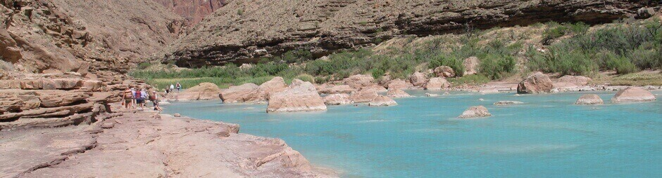
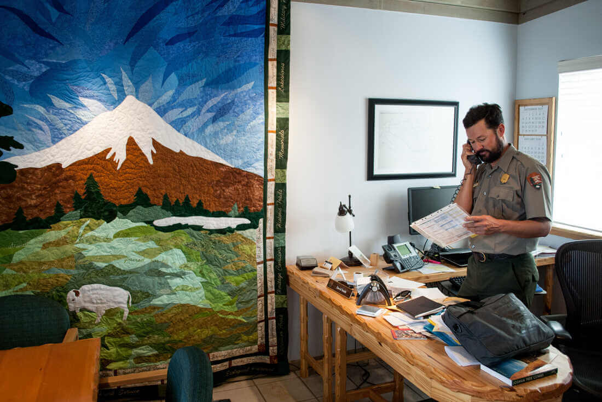
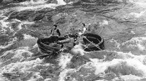

Our mission is to deliver thrilling, safe, and unforgettable white-water rafting adventures that inspire a love for the outdoors.


Rapids Rafting
History
Rappid Rafting was founded in 2009 by a group of adventure enthusiasts who wanted to share their love for the thrill of white-water rafting. Starting out on local rivers, they quickly gained a reputation for expert guidance and exciting expeditions.
Over the years, Rappid Rafting expanded its offerings to include routes for beginners and adrenaline-seeking pros alike, always prioritizing safety and an unforgettable experience in the great outdoors.
Adventure Awaits You!